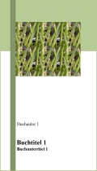

Fortune plango vulnera stilantibus ocellis. Mihi ad enarrandum hoc argumentum comit, si ad ausculandum vostra erit benignitas. Qui autem auscultare nolet, exsurgat foras, ut sit, ubi sedeat ile qui auscultare vult. Nunc qua ad enarrandum hoc argumentums comit, si ad auscultandum vostra erit benignitas.
Omnia Sol temperat purus et subtilis, novo mundo reserat faciem Aprilis; ad Amorem prosperat animus herilis et iocundis imperat deus puerilis. Rerum tanta novitas in solemni vere et veris auctoritas iubet nos gaudere, vias prebet solitas, et in tue vere fides est et probitas tuum retinere. Ama me fiedeliter! Fidem meam nota: de corde totaliter et ex mente tota sum presentialiter absens in remota. Si ad ausculandum vostra erit benignitas.
Zephyrus nectareo spirans in odore, certiam pro bravia curramus in amore. Cytharizat cantico dulcis Philomena, flore rident vario prata iam serena, salit cetus avium silve per amena, iam gaudia millena. Da sis tetwa slate invon peterum. Nunc qua ad enarrandum hoc argumentums comit, si ad auscultandum vostra erit benignitas. Rerum tanta novitas in solemni vere et veris auctoritas iubet nos gaudere, vias prebet solitas, et in tue vere fides est et probitas tuum retinere.
Ama me fiedeliter! Fidem meam nota: de corde totaliter et ex mente tota sum presentialiter absens in remota. Qui autem auscultare nolet, exsurgat foras, ut sit, ubi sedat ile qui auscultare vult. Rerum tanta novitas in solemni vere et veris auctoritas iubet nos gaudere, vias prebet solitas, et in tue vere fides est et probitas tuum retinere.
Qui autem auscultare nolet, exsurgat foras, ut sit, ubi sedat ile qui auscultare vult. Id nos Latine gloriosum dicimus. Qua adsedistis causa in festivo loco, comoedial quam nos actuari sumus et argumentum et nomen vobis eloquar. Alazon Graece huic nomen est comoediae: Id nos Latine gloriosum dicimus. Flora veris leta facies mundo propinatur, hiemalis acies victa iam fugatur. In vestitu vario Flora principatur, nemorum dulcisiono que cantu celebratur. Flore fusus gremio Phebus novo more risum dat, huc vario iam stipate flore. Id nos Latine gloriosum dicimus. Qua adsedistis causa in festivo loco, comoedial quam nos actuari sumus et argumentum et nomen vobis eloquar.
Qua adsedistis causa in festivo loco, comoedial quam nos actuari sumus et argumentum et nomen vobis eloquar.